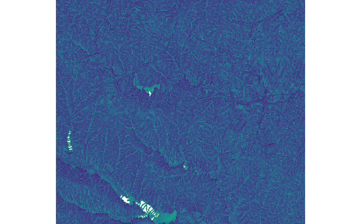

DESCRIPTION
r.topidx creates topographic index (wetness index), ln(a/tan(beta)), map from
elevation map
where
- a: the area of the hillslope per unit contour length that drains through any point,
- tan(beta): the local surface topographic slope (delta vertical) / (delta horizontal).
Input maps may have NULL values. For example, if you have a MASK for
a watershed (basin map from r.water.outlet), the
following command will create a masked elevation map (belev):
r.mapcalc "belev = if(isnull(basin), basin, elev)"
r.stats -Anc prints out averaged statistics for topographic index.
EXAMPLE
Running the command below will generate the topographic index map shown in the figure:
g.region raster=elevation -p
r.topidx input=elevation output=topidx_elevation

Figure: topographic index map derived from elevation map
SEE ALSO
r.topmodel,
r.water.outlet,
r.mapcalc
Known issues
REFERENCES
Cho, H., 2000. GIS Hydrological Modeling System by Using Programming Interface
of GRASS. Master's Thesis, Department of Civil Engineering, Kyungpook National
University, Korea.
Moore, I.D., R.B. Grayson, and A.R. Ladson, 1991. Digital Terrain Modeling: A
Review of Hydrological, Geomorphological, and Biological Applications.
Hydrological Processes 5:3-30.
AUTHORS
Huidae Cho
Hydro Laboratory, Kyungpook National University, South Korea
Based on GRIDATB.FOR by Keith Beven.